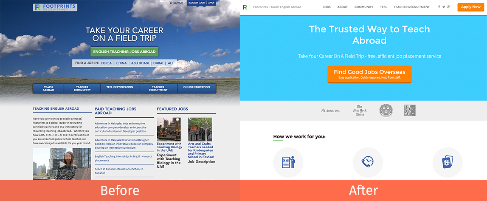

Footprints - Recruiting
On this short project, I had to improve the conversions of Footprints homepage, which were based on how many users looked for a teaching job. [Footprints recruiting helps you find english teaching jobs overseas.]
What I did
To do this I clarified the intent of the business and made it really easy for users to take a decision and start living their dream job abroad. Before the intent of the website wasn't clear and had too much information distracting the user, so my approach was to eliminate that and point out the benefits the user would have if they use Footprints services.

I needed to understand the business and why they were unique or valuable to it's potential users, after that was clear I ran a benchmark with similar businesses to understand how they were comunicating their services, this gave me a clear perspective on how to stand out over the competition while also providing the necessary information a potential customer would need.
Key tools and deliverables
- Stakeholder Interviews
- Benchmark analysis
- Sketching
- Prototyping
Results
After the first week of launching the redesign, Footprints received a 11% increase on the conversions.